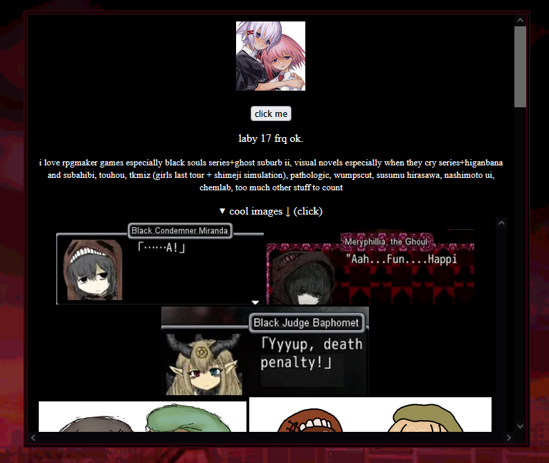

anniversary of nekoweb account - 2/25/25
today marks the 1 year anniversary of having a nekoweb dot org account
and using it. one year ago, i had a then-used neocities, and i had
used my nekoweb for a simple about page for twitter/tumblr at the
time.. (FUCK CARRD!!!!!!!!!!!!!!!!!!!! FUCK RENTRY!!!!!!!!!!!!!!!!
STRAWPAGE SOMETIMES TOO... i frequently hate users of all three of
these things Especially rentry grrr)

it looked like this ^ very low effort indeed... i can code better
simple about pages now (example). i have improved in web design so much in a simple year, and
including my time in neocities, YEARS... and nekoweb changed my life
extremely...... ive made a lot of friends from it
basically i am very thankful for nekoweb existing because i have made
3 billion friends from it :pray: shoutout to my nekoweb server oomfs
and all my friends.. here is to a long lasting nekoweb community even
if theres drama sometimes
moe... - 2/17/25
lets pray this is my first coherent post....
oftentimes when people think about "moe", they think of big anime eyes
and general cuteness... but what about unconventional "moe" traits? it
could be anything you find cute within the realm of otakuism, in my
opinion... for me, there are many things i like that i consider moe.
some of these things include:
- bandages
- blood
- collared capelet/capelet in general
- eyepatch (not the pirate kind)
- eye motifs
- floppy sleeves
- bruises
i may be strange for finding some of these adorable and awesome, but
it is my own personal preference... i am a bit odd so i really like it
when anime girls have those 'hurt' motifs about their designs
(examples: abiru from sayonara zetsubou sensei, michiru sakurada from
higanbana no saku yoru ni), and floppy sleeves are really cute
(example: ougi from monogatari) ... capelets are my favorite clothing
item of all time, this sparked from multiple characters i like
including michiru sakurada, ayana otonashi, mgr from cookie, elma from
black souls, veronica from franken fran, etc... i want to see more
characters with my favorite moe attributes..!!! my
sona in
particular has many of them because it is my sona and therefore of my
own creation and choosing of how it will be designed muahahaha...
a - 2/8/25
i cant stop starting videogames and then not finishing them i neeed
those adhd pills but im scared of medicine and a lot of things in
general my brain is kind of slop and i just kinda talk to myfriends on
discord for hours upon hours lke for example like yesterday i stayed
up until 12 am!!!!!!!!!! talking to my nekoweb friends theyre just way
too cool and entertaining and i love them but i am NEVER or BAREYL
productive ohhhhhhhhhhhhhhhhhhhhhhhhhhhhhhhhhhhhhhhh and i started
studio system guardian angel today and its scary as shit (tm bought me
it:3) and it is VERY COOL but scary as fuck but going to continue it
and my life has been kind of weird recently there are many things that
i think are going to change soon lol also cant stp drawing koishi and
satori but cannot put anything worthy on here sadly. also just started
getting sad crying again for reasons I cannot say did you know that
mongolia is the most sparsely populated country and that kiviak is
awesomne and i want to ttry salmiak and i would never try balut ever
sorry filipinos. italians went off with maggot cheese please break the
norm but id never try that. i would only try salmiak even if it burns
off my tongue. surstromming looks nasty. today i continued to rot in
my room and talk to my friends on discord for anotehr 50 hours. i have
the worst blog of all time. i want to go to mongolia and lay in the
steppe and let the earth consume me because i hate myself when things
ive been used to for a long time change drastically .................
i want to reread when they cry series a lot but i dont have a spare
500 hours to waste that can fit in with all the other shit i do (like
talk to friends on discord) did you know giant peruvian inca corn
surrealism - 1/18/25
copy and pasted from my twitter
ever since i was little i've been obsessed with the surreal and
unknown, i love unexplainable things in fiction and open ended stories
and i really hope to make my own one day. in 2016 i was obsessed with
monument valley and that probably altered my brain chemistry for the
rest of forever (game about a forgiveness seeking princess navigating
impossible geometry) though in 2017-2019 i was obsessed with kids
cartoons however never the 'realistic' ones, stuff like gumball +
adventure time where theres still surreal elements in a way? and
moomin but i guess it was the somewhat surreal aspect of a
non-humanlike world i lost myself in. i've had a lot of interests that
aren't exactly surreal actually but for the ones that are i've always
loved them and held on to them (i've been a yume nikki fan since 2019)
i dont like how a lot of normal people (NORMIES) hate unexplainable
fiction so much like for one example, a couple weeks ago i put my
history class on angel's egg muahahaha because we weren't doing
anything and this one girl was like "Why is she pregnant. [i
repeatedly said she's not pregnant it's an egg and it's up to
interpretation] I don't understand this and i dont like it Why" which
really annoyed me because people who look for answers too much in
fiction immediately arent really Enjoying it they just want to know
everything asap which isn't good you have to sloowly take in
information and draw your own theories/conclusions when it comes to
angels egg... i have serious problems with being able to finish stuff
so i haven't been able to watch much of david lynch works but
especially after his passing i would like to finish twin peaks, people
like him are incredibly rare in this media climate of today. people
don't want to be sincere and send a passionate message or idea anymore
most of them just want to make money and make the audience laugh or
entertained instead of thinking more deeply about topics and truly
appreciating art.
christmas - 12/25/24
look at my digital christmas gifts now!!!!!!!!


they are from my friends
medjed and finesse...!!! i am
very happy.... besides these for gifts, from my family i got so much
money its insane but my favorite gifts i got were probably:
- wikipedia umbrella, shirt, and scarf
- satori komeiji sukusuku hakutaku plush
- jun togawa tamahimesama vinyl
with the new money i got i bought stuff for cosplay....
subahibi - 12/21/24
oh my god i finished rereading subahibi just now after putting off
rereading it since i first read it in 2022, and oumajgaddddddd this is
actually one of the best vns ive EVER read still... i really didn't
appreciate it enough in 2022 so my mouth is kinda just hanging open by
how blown away i am and im shaking a bit... the themes were extremely
inspirational, i like the philosophy talk and think its interesting, i
really like the characters (especially my wife ayana), i love the
character designs, the overall messages it gives is incredibly amazing
and i really like how the author, sca-ji, inserts so much of his
thoughts and opinions into the work directly and its just so
awesome... my favorite character is ayana and its been her for quite a
while, but after rereading, my love for her as a character has
amplified ... wow........................... and to contrast suba
ayana with tsuire ayana, i think both of them are very very good and
interesting but tsuire ayana is explored more, however that doesn't
mean i will like suba ayana less of course. i am definitely going to
cosplay ayana to anime boston, muahaha... and will make a
subahibi/tsuire shrine soon as well...!!! after finishing this vn
again, i am so much more inspired and motivated...

anime boston - 12/20/24
i am very sorry this blog has been so suck recently lol... i want to
stop venting so much when i try to think of stuff to write about. it's
really cringe and i might purge the previous posts soon... anyways
getting to what i was actually going to write about, i am going to go
to anime boston next year, in may 2025. i think that this convention
is really really good, and i like it a lot... i've been going every
year since 2022. i would've been going much earlier but the pandemic
happened unfortunately. i kind of wish i was able to experience
pre-pandemic anime conventions, because the vibes seemed so much
different before 2020. anime cons in general looked more genuine, and
today there are many big conventions full of slop. but anime boston,
in my opinion, isn't as bad as others. but take this with a grain of
salt as the only anime con i've been to is anime boston lol. i've just
heard from many others that cons like anime expo and anime nyc are
full of slop sadly... yet anime boston feels realer if that makes
sense. maybe i'm just looking at it with rose colored glasses since
it's my local con. next year, i hope to cosplay koishi komeiji and
ayana otonashi to it. one of my friends on twitter/discord is going to
run an eroge panel, so i'm looking forward to that quite a bit...!
additionally i am REALLY hoping i'll meet up with any online friend to
walk around with because i don't have any irl friends that would be
okay with me cosplaying from an eroge, probably... i mean i do have
one peer at school that doesn't care about that kind of thing, however
i think he is kind of annoying and we don't share any interests.
my first blog post(not really) - 11/11/2024
i've been working on this new version of my website for 3 days
straight now, and although i am writing this before my site is open
again, i am very proud of the work i have accomplished thus far, i
might even say the most recent pages have been my best web design work
ever..!! unfortunately this cannot distract from how my life has been
so sucks and i am very depressed, i wish i could talk about it in
detail a bit but its all really personal stuff ...
although im so hollow i am
glad i am able to work on my site again.... getting ideas for things
actually saves me from doing absolutely nothing lolll more people who
are really depressed should force themselves to pick up hobbies
because then you are both doing something worthwhile AND something to
distract from the tormenting thoughts....


{kind=link}